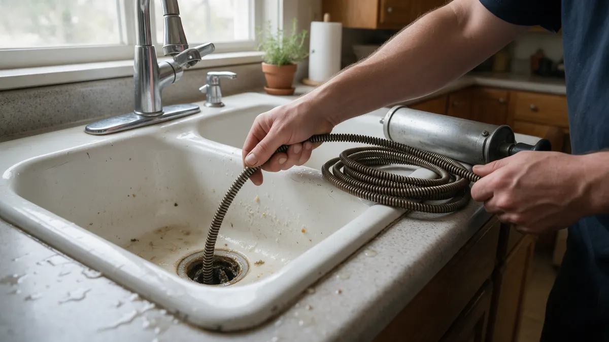

Clogged Drains: A Colorado Homeowner Handbook

Slow sinks and gurgling tubs are easier to solve when you know where the blockage sits. This handbook helps Colorado homeowners sort a one-fixture clog from a main line problem, try safe first steps, and talk sensibly with a plumber. If a drain keeps coming back, Plumbing Pros Colorado can connect you with independent local plumbers who handle clearing and inspection.
Work out how far the problem reaches
A single slow sink usually means a clog in that fixture's trap or branch line. If the tub gurgles when the washer drains, or two fixtures on the same floor back up together, the blockage is further along. When the lowest drain in the house, often a basement floor drain or shower, overflows first, suspect the main line.
- One fixture only
- Several fixtures together
- Gurgling from other drains
- Water at a basement floor drain
- Sewer smell indoors
Smell can help too. A sour or sewage odor from a floor drain points deeper than a kitchen sink that merely drains slowly, and a gurgle after a flush hints that air is being pushed past a blockage.
Safe things to try first
Remove the stopper and pull out hair by hand or with a plastic drain tool. A cup plunger works on sinks and a flange plunger on toilets. Hot tap water and a squirt of dish soap can loosen grease in a kitchen drain.
Skip harsh chemical openers when you can. They can damage older pipe, splash on skin and leave the plumber working in caustic water if the clog needs mechanical clearing.
What a plumber does when the clog stays
For most blockages the plumber feeds a cable with a cutting head through the line. Hydro jetting uses high pressure water to scour grease and scale from pipe walls, and is often considered for repeated kitchen or main line buildup.
If the problem returns, a sewer camera inspection shows what the pipe looks like inside, whether roots, a sag or a cracked joint is involved, and where a cleanout access point could be added.
Colorado reasons drains slow down
Hard water leaves mineral scale that narrows pipe over time, and Front Range homes built decades ago may still have cast iron or clay lines that roughen with age. Mature trees along older streets in neighborhoods such as Park Hill in Denver or Old Town Fort Collins send roots toward joints.
Expansive clay soil can shift buried lines slightly, creating low spots where solids settle.
Keeping drains clear
Use strainers in showers and tubs, wipe greasy pans before washing, and put only toilet paper down toilets. Wipes labeled flushable still tend to snag. Run hot water after the dishwasher cycle to move grease along.
If you reach out through our line, you will be talking to an independent plumber who explains the plan, since we only make the introduction.
Kitchen, bathroom and laundry lines differ
Kitchen drains clog from grease and food solids that cool and harden inside the pipe. Bathroom drains fill with hair and soap scum, while laundry standpipes collect lint that escapes the machine. Knowing which type you have helps decide whether a store-bought tool is enough.
Laundry standpipes that overflow during a spin cycle often point to a restriction further down the line, so mention that detail when you describe the problem to the plumber.
Frequently asked questions
Why does my basement floor drain smell?
A dry trap is the usual cause. Pour a bucket of water into the drain to refill the trap seal. If the smell persists or water rises there when upstairs fixtures run, a main line blockage is possible and worth a plumber's look.
Are enzyme cleaners worth trying?
They can help with mild organic buildup in kitchen or bathroom drains if used regularly. They will not clear a solid blockage, tree roots or a collapsed pipe, so do not rely on them when water is already backing up.
Can tree roots clog a sewer line?
Yes. Roots seek moisture and enter through small cracks or loose joints, then grow into a mass that catches paper and waste. A camera inspection confirms roots, and the plumber can discuss clearing or repair options.
Should I pour boiling water down the drain?
Hot tap water is fine, but a full pot of boiling water can soften PVC joints and crack porcelain. Use very hot water, not boiling, and avoid it entirely if the sink is already full of standing water.
How often should drains be cleaned?
Homes without problems rarely need scheduled cleaning. Older homes with a history of backups, or properties with large trees, may benefit from a periodic camera check. Ask the plumber what suits your pipe material and history.
Why does water come up in my tub when I run the washer?
The tub is often the lowest open drain on that branch. When the washer pumps out, the blockage downstream forces water up there. It suggests a clog in the shared line, and it is worth describing to the plumber exactly as you saw it.
Related plumbing services
Drain Cleaning by city
- Water leak repair in Colorado Springs
- Water leak repair in Broomfield
- Water leak repair in Woodland Park
- Water leak repair in Westminster
- Water leak repair in Lakewood
- Water leak repair in Golden
Ready to talk to someone? Call (720) 794-0974 or visit get a stubborn clog cleared.